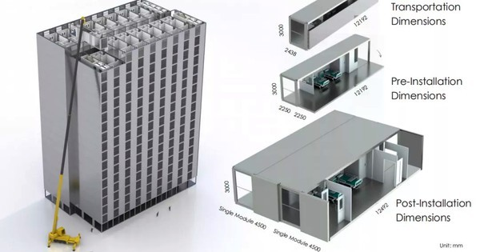

Rebuilding Lives: The Road to Recovery After the Turkey Earthquake
 February 23, 2023
February 23, 2023
As I sit down to write this, my heart is heavy with the weight of recent events in Turkey. The ground beneath our feet shook and trembled, buildings swayed, and people ran for their lives. The recent earthquake has left a trail of destruction in its wake, leaving many of us shaken and in shock.The news reports tell of collapsed buildings, trapped survivors, and the devastating loss of life. The scenes of chaos and destruction are too much to bear, and it breaks my heart to see the pain and suffering of those affected by this natural disaster.
I can only imagine the fear and terror that must have gripped those caught up in the earthquake. The suddenness of the quake, the rumbling of the ground, and the shaking of the buildings must have been overwhelming. It is a feeling that I hope never to experience, but unfortunately, it is a reality that many have had to face.The aftermath of the earthquake is just as harrowing. The images of people digging through rubble to find survivors, the wails of family members mourning their loved ones, and the long road to recovery that lies ahead are all too real. It is a time of mourning and reflection, a time to come together as a community and support one another in the face of tragedy.
But amidst the darkness, there are also stories of hope and resilience. Stories of neighbors helping each other, strangers lending a hand, and volunteers pouring in from all over to assist in rescue efforts. It is heartening to see people coming together in the face of adversity, reminding us that we are all in this together.As we move forward from this tragedy, let us not forget the lessons it has taught us. Let us remember to cherish every moment, to be grateful for our loved ones, and to appreciate the beauty and fragility of life. Let us also work towards creating more resilient communities, better equipped to handle natural disasters and emergencies
Though earthquakes can’t be prevented because it’s a natural phenomenon, we can always take precautions to mitigate the widespread loss of lives and property. We can significantly mitigate their effects by identifying hazards, building safer structures, and providing education on earthquake safety. By preparing for natural earthquakes we can also reduce the risk from human induced earthquakes. BROAD Sustainable Building (BSB) is a construction company that specializes in building high-rise structures using prefabricated modular components. BSB has developed a proprietary construction method that uses high-strength steel and advanced engineering techniques to create earthquake-resistant buildings that can withstand strong seismic activity. BSB's buildings have been tested in simulated earthquake conditions and have proven to be highly resilient. By using BSB's construction method, communities can have greater confidence in the safety and stability of their buildings in the event of an earthquake. While earthquakes cannot be prevented, BSB's innovative approach to construction can help to reduce the impact of seismic activity and protect lives and property.